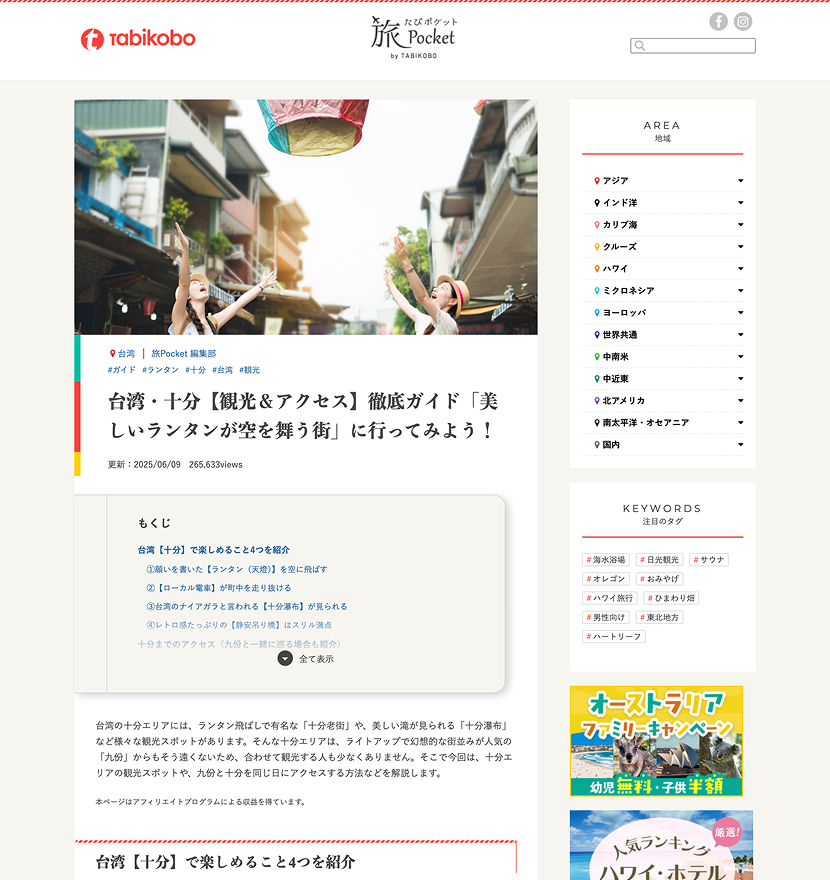
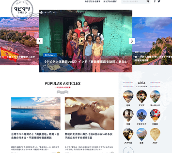
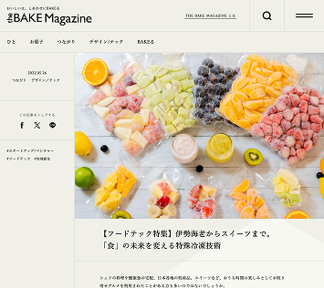
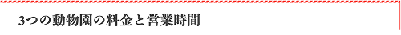
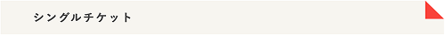
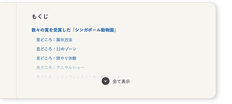
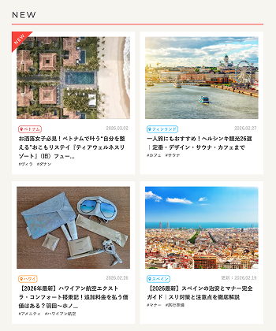
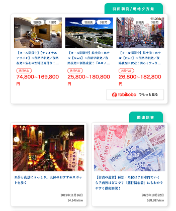

2022年 1〜2月 株式会社旅工房
情報整理によるユーザビリティ改善
担当：デザイン / コーディング

長年運用されていたWordPressメディアのUI改修案件。
記事構造の整理とデザイン刷新を目的に、
UI設計・デザイン・CSS実装までを一貫して担当。
チーム編成：ディレクター1名、デザイナー兼コーダー1名（自分）
WordPress内のパーツやスタイルが
整理されておらず、見た目と管理の両方が
複雑になっていた。
ECサイトのテーマカラー変更に伴い、
メディアデザインも統一する必要があった。
大量の記事が存在するため、
CSS変更だけでUI改善できる設計が必要だった。
① 他社メディアリサーチ
② 既存記事の構造調査
③ デザインコンセプト設計
④ UIパーツデザイン
⑤ CSS実装
⑥ テスト環境検証
⑦ 本番反映

株式会社RisingAsia「タビタツマガジン」

株式会社BAKE「THE BAKE MAGAZINE」
『旅行の情報を書き込んだ手帳』
「旅好きな女性のための情報サイト」として運用されてきた旅Pocketを、
編集部員が集めた情報が詰まった“旅の相棒となる手帳”に見立ててデザイン。
手帳の要素を取り入れて遊び心を持たせつつ、
読みやすさが損なわれないよう装飾的になりすぎないデザインを意識した。
H2（しおり紐モチーフ）

H3（ドッグイヤーモチーフ）

目次（見開き右ページのイメージ）

記事一覧ページサムネイル
（ポラロイド写真モチーフ）

他ページへのリンク
（付箋やメモを貼り付けたイメージ）

WordPress記事構造を崩さないよう、
既存記事のHTML構造を分析しながら
CSSのみでUI改修を実装。
実際に運用するのはコーディング知識の無い
他部署のスタッフであるため、
WordPress上での編集しやすさも重視した。